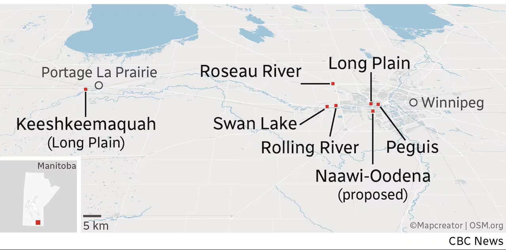
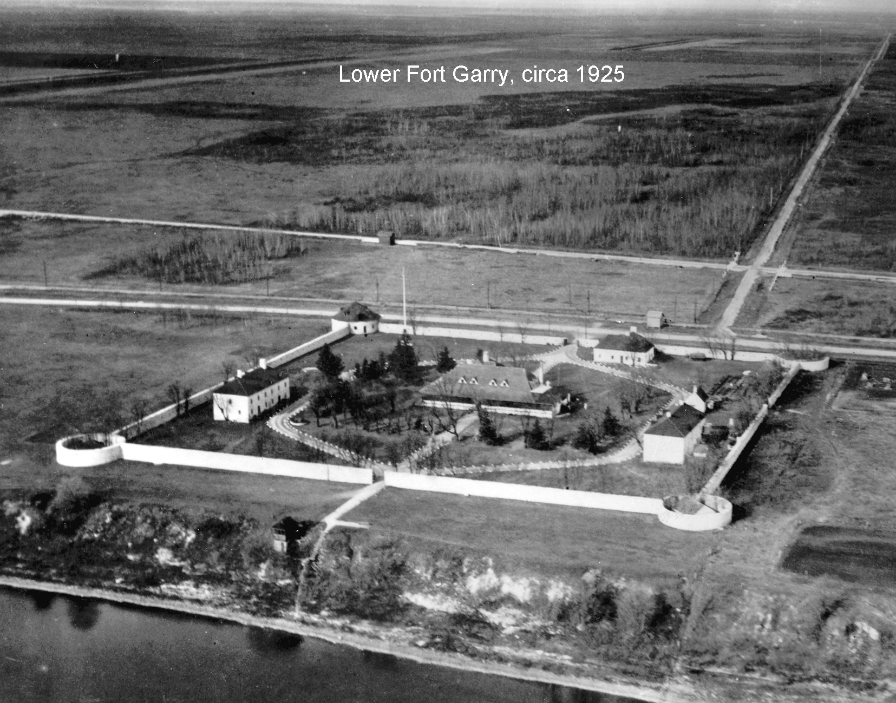
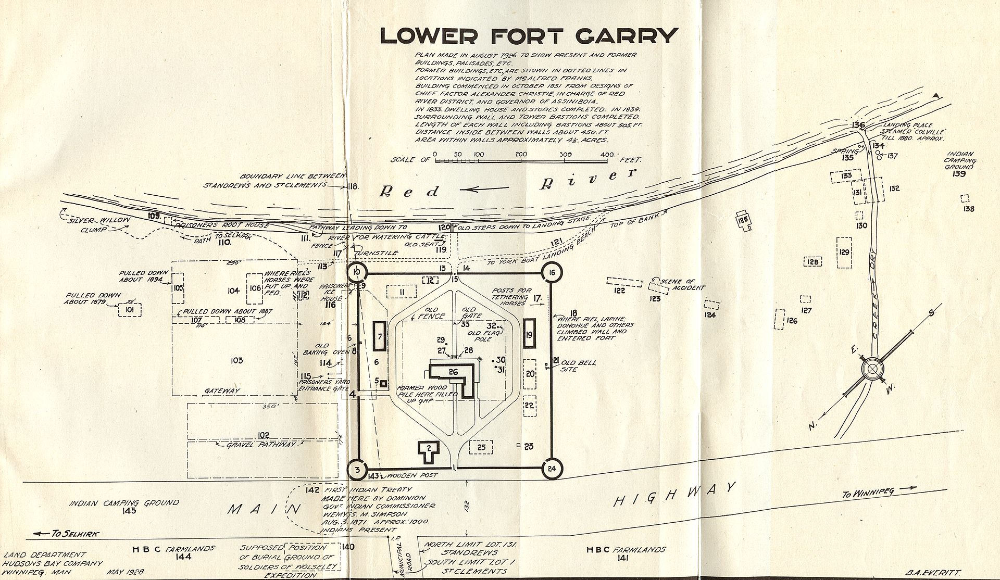

History of Treaty 1 Territory
Treaty 1 was one of the first agreements made between First Nations and the Crown in 1871. It covers parts of southern Manitoba including Winnipeg.
When the Treaty Was Signed
Treaty 1 was signed on August 3, 1871, at Lower Fort Garry. The treaty was negotiated between representatives of the Crown and leaders from the Anishinaabe and Swampy Cree Nations. The treaty outlined how the land would be shared and what promises were made between both groups.
The signing of Treaty 1 marked a significant moment in Canadian history, as it was one of the first treaties to be established in the region. It set the stage for future negotiations and agreements between Indigenous nations and the Crown.
Urban Reserves
Urban reserves are parcels of land within cities that are set aside for Indigenous communities. These reserves allow First Nations to have a presence in urban areas and provide opportunities for economic development and cultural expression. When Treaty 1 was signed they were promised a land of 160 acres of land in exchange for lands in what is now southern Manitoba.

Historic Terms of the Treaty
Treaty 1 was created between Canadian government officials and local Indigenous communities because both sides wanted security for their land and resources. The Anishinaabe and Swampy Cree Nations wanted to protect their traditional lands while also finding a way to adjust to the changes happening as more settlers began arriving in the area. At the same time, the Canadian government wanted control over the western lands. Their goal was to expand and settle these areas, and they also hoped Indigenous peoples would eventually adopt the lifestyle of the settlers. Instead of using force, the government decided to make agreements called the Numbered Treaties. They believed this would be a more peaceful way to gain land, especially after seeing violent conflicts between Indigenous peoples and government forces in the United States. Another important reason for Treaty 1 was the plans of Adams George Archibald, the first Lieutenant Governor of Manitoba. He wanted to secure land around Lake Winnipeg and the western side of the Red River Valley so the government could develop farms and use the land’s resources. By this time, government leaders were more focused on building agriculture and permanent settlements rather than continuing the fur trade that had shaped the region’s economy for many years.


What Made Treaty 1 Different
Treaty 1 was one of the first numbered treaties that helped open western Canada for settlement. However, many Indigenous leaders believed the agreements also included promises not written in the documents, often called outside promises.
Where was Treaty 1 signed
Treaty 1 was signed at Lower Fort Garry, a historic trading post just north of present-day Winnipeg.The signing took place on August 3, 1871 between representatives of the Canadian government and several First Nations, including the Anishinaabe and Swampy Cree Nations. Lower Fort Garry was chosen because it was an important meeting place and trading center in the region during the fur trade era. Today, the site is preserved as a national historic location where people can learn about the treaty, its history, and its lasting impact on Indigenous communities and the development of Manitoba.